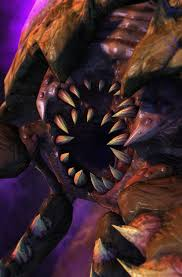
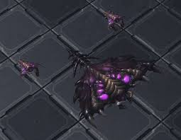

Requirements
- Building: Greater Spire
- Spawned from Coruptor
- Hatchery
- 300 Minerals
- 250 Vespene gas
- 4 Supply



The Zergling is a small and fast melee attacker and the backbone of the Zerg army. Individual Zerglings are weak, but large groups can surround and terrorize enemy ground forces. In such groups, they soak a lot of incoming damage and provide a shield for more expensive units. Two Zerglings hatch from a single Cocoon, and each Zergling only uses one-half of a supply point. Once a Baneling Nest has been constructed, Zerglings can morph to Banelings at any time.